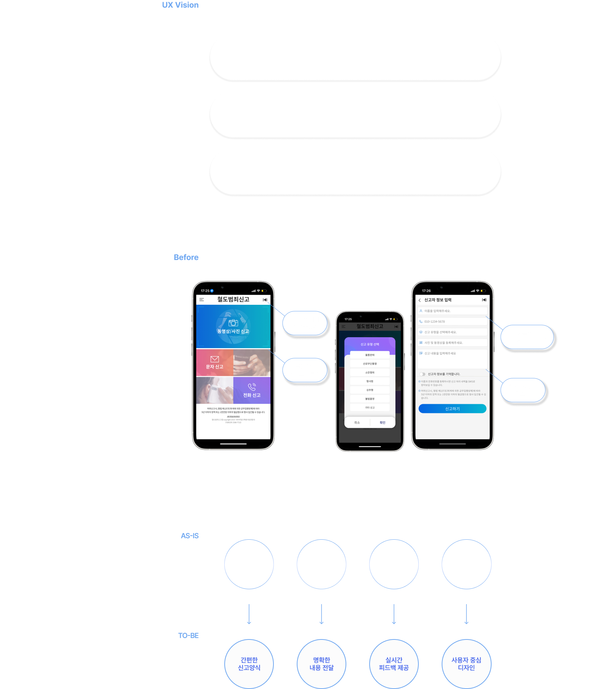
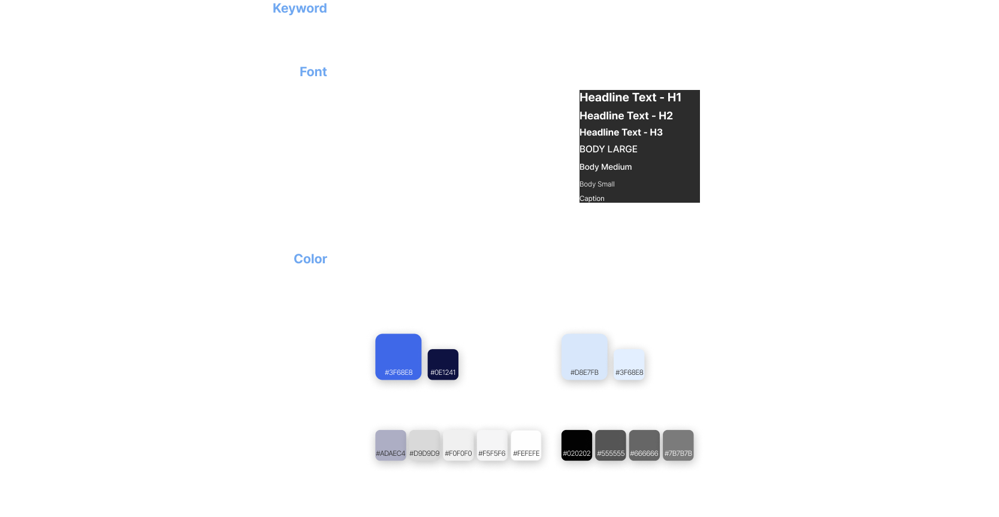
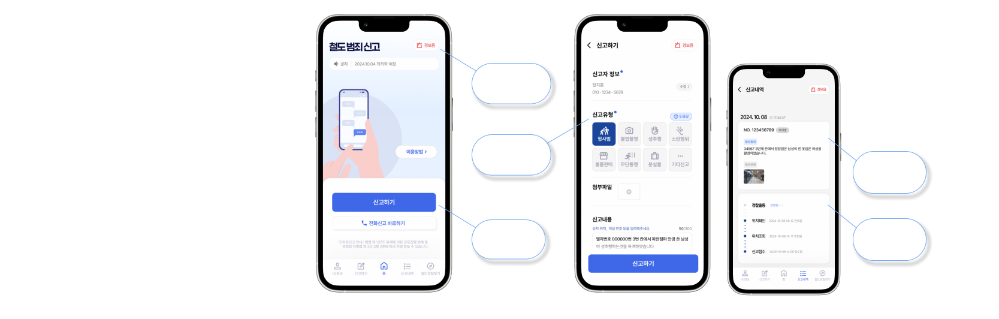

-
OVERVIEW
"소리 없이 빠르고 안전하게! 당신과 제일 가까운 철도경찰"
앱을 이용하여 목소리를 내지 않고도 빠르고 간단하게 신고할 수 있도록 신고 절차를 간소화하였습니다. 기존 앱에 없던 다양한 도움말과 실시간 신고 현황 기능을 추가하여 더욱 사용자 친화적인 앱으로 리뉴얼해 보았습니다. -
MY PART
디자인 총괄
PPT 제작
발표
기능 구현
-
TIME LINE

-
UI/UX DESIGN

-
STYLE GUIDE

-
AFTER

-
REVIEW
bad
★ 기존 앱과 경쟁사에 대해 수집할 수 있는 정보가 부족했다.
★ 프로젝트 초반에 역할 분담 없이 진행되어 작업이 약간 더디게 진행되었으나, 이후 각자의 강점인부분을 찾아 빠르고 효율적인 작업이 가능했다.
★ 앱 개선 후 가독성이나 디자인적인 부분에서는 의도한대로 개선이 되었으나, 신고하기의 과정이 기존 앱과
비슷하다는 생각이 들었다.조금 더 도전적인 마인드로 기존에 없던 참신하고 효율적인 신고 어플로 리뉴얼했으면
어땠을까 하는 아쉬움이 남았다. 사용하지 못한 아이디어를 다른 프로젝트에서 활용하고 싶다.good
★ 효율적인 작업을 위해 현재 필요한 작업을 우선적으로 파악한 후 팀원과 계속 공유하고 분담하며 작업했다. 공유와
소통이 팀프로젝트에서는 정말 중요한 부분이라는 것을 깨달았다.★ 어플 및 PPT 디자인 작업이 더디게 진행 될 때, 다양하고 새로운 디자인을 제시하였고 좋은 의견을 받아
최종 디자인에 채택되었다.★ 각자의 부족한 부분을 보완해주며 프로젝트를 마무리한 것. 팀원 개개의 강점이 확실하여 팀의 밸런스가 매우 좋았다. 서로 의지하고 응원하며 훈훈한 분위기속에 진행되었다.
takeaway
★ 문제에 서로의 부족한 부분을 채워주며 함께 성장하는 경험을 통해, 프로젝트의 완성도가 높아지는 과정을 보며
협업의 중요성을 깊이 깨달았다. 여럿이 있으면 못할 것이 없다고 생각하게 되었다.★ 초반에는 미적인 디자인에 초점을 두어 버튼의 위치나 크기에 대해 고려하지 않았다. 디자인을 여러번 수정하며,
사용성과 미적인 디자인 사이의 적절한 균형에 대해 많은 고민을 하게 되었다. 이것이 주관적인 감상에 그치지 않고
충분한 근거를 바탕으로 사용자를 설득해야 한다는 점을 깨달았다.